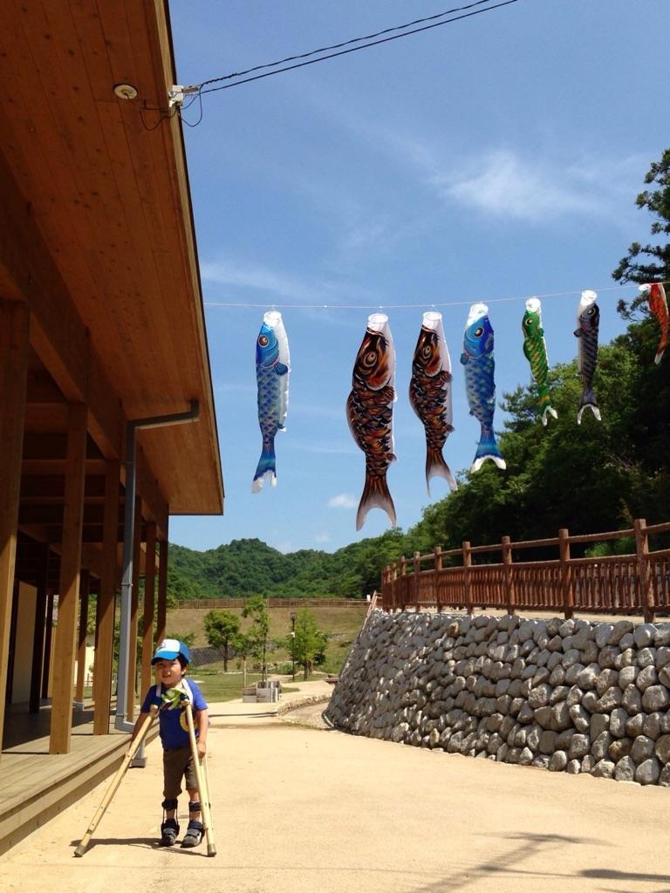

ケース６ 友弘君
◎ 我が子の発達経過
私たち夫婦には長女がいましたが、男の子も欲しく思い、妊娠した時には男の子であるように願いもしました。しかし妊娠32週で、前置胎盤の緊急手術で帝王切開の誕生となったのです。
2008年01月に産まれて1902gでした。
NICUに入っていたのは、２から３週間ほどだったと記憶しています。その後、GCUに移り、約１ヶ月後に退院しました。
生後１ヶ月でPVLと診断され、６ヶ月の時に癲癇発症。２週間Ａ市立市民病院に入院して、薬の調整を受けました。10ヶ月で発作が止まり、脳波も正常となりました。現在、薬を減らしている途中です。
Ｂ市立療育センターで、９ヶ月から訓練を開始しましたが、泣いているので玩具で遊ぶことばかりでした。
小児神経科の主治医からは、「寝たきりにはならないと思うけど…」といわれ、担当の理学療法士は口にはされませんでしたが、独歩はしない前提の訓練内容のようでした。
「訓練と称しながらも、玩具で遊んでいて運動機能が良くなるのだろうか？」
こんな疑問を感じて、ウエブサイトで調べて調べて、LS-CC松葉杖訓練法に辿り着いたのです。
∞ 訓練指導に当たる者から見た友弘君の変化
生後９ヶ月を過ぎた友弘君の全身状態を診て、痙性麻痺があり、直ぐにでも訓練に取りかからなければならないと感じました。
お母さんの話によれば、最寄りの療育施設では、様子を診る程度での訓練が行われていると聞いて、どこの地方でも療育指導がなされないでいるのだと感じさせられました。
友弘君の状態は、臥位で寝ているだけで動かない。乳児の発達に従い、全身のストレッチ、肘立て位、おすわり、寝返りを指導することとしました。
身体の大きな関節の動きが少し悪く、全身のｽﾄﾚｯﾁに力を入れることを忘れないようにお母さんに伝えました。
・ 訓練を開始して３ヶ月後：首がすわる。
・ 訓練を開始して５ヶ月後：寝返り開始。
・ 訓練を開始して１年３ヶ月後：自分で床に座位となる。
訓練内容変更：全身のストレッチ、床からの立ち上がり、スタビライザでの立位。
・ 訓練を開始して１年６ヶ月後：つかまり立ちを始める。
・ 訓練を開始して１年７ヶ月後：四つ這いを始める。
・ 訓練を開始して１年９ヶ月後：伝い歩きを始める。
歩行器を貸し出し、歩行器歩行の練習。
・ 訓練を開始して２年３ヶ月後：貸し出した歩行器で歩くことが好きだとのこと。
・ 訓練を開始して３年１ヶ月後：立位の姿勢が良くなっている。
喜んで歩行器を押しているとのこと。
・ 訓練を開始して３年５ヶ月後：立位に持ち込み数秒姿勢を維持している。
・ 訓練を開始して４年５ヶ月後：松葉杖歩行訓練に入る。
歩行器を使っていたが、歩行バランスを覚えないようである。松葉杖歩行練習はどうなのか、確かめる必要がある。
・ 訓練を開始して４年７ヶ月後：松葉進度４となる。
|

|
・ 訓練を開始して５年２ヶ月後：床からの一人での立ち上がりが可能となり、平坦な所での独歩も行える。
・ 訓練を開始して５年６ヶ月後：地元の支援学級に入学。
・ 訓練を開始して５年７ヶ月後：階段昇降の練習に入る。
・ 訓練を開始して５年10ヶ月後：１歳時に診ていただいた小児整形外科の先生の診察…
１歳の時の記録と比べて、動きがかなり改善したことは明らかでした。
上肢では、肩の挙上や肘の伸展があり、巧緻動作の障害が著明でした。
下肢では、ハムストリング・大腿薄筋の緊張が強く、伸展制限は－15度くらいでした。
レントゲンでは、１歳時と比較して悪化はなく、今のところ脱臼の心配はありません。
私としては、まず両股関節か両肩関節に対して筋解離術を行ってはどうかと思い、お母様に話しをさせて頂きました。
・ 訓練を開始して６年１ヶ月後：肩関節周囲の筋乖離術を受ける。
・ 訓練を開始して６年５ヶ月後：肩が下がった状態で、過ごしたり歩いたりするようになっている。
・ 訓練を開始して６年９ヶ月後：股関節周辺筋の筋解離術を受ける。
・ 訓練を開始して６年11ヶ月後：独歩の歩容が良くなり、立ち止まる姿勢も良い。
・ 訓練を開始して７年後：抗痙攣剤の服用が無くなる。
◎ 友弘君のその後
♪ 保護者の感想
LS-CC松葉杖訓練法では、「沢山歩きなさい！ 転ぶこと・転び方も覚えなさい！」といわれてからは、友弘も進んで楽しみながら歩き回り、転ぶことにも慣れていきました。
それが体力面、精神面にも功を奏し、ランドセルを肩に登下校に文句もいわずに頑張っています。
家や学校、その他の安全な場所では、一人でトイレに行けるようになりました。
お風呂も洗い残しを手伝う以外、一人で入れるようになってきました。
「自分でやってみたい」という気持ちが強くなっています。
歩けることが、色々なことへの興味に繋がるのだと思います。
まだまだ課題は山積みですが、気持ちがあっても身体がついていけないこともあります。それでも、自立に向けて少しずつ頑張っています。
LS-CC松葉杖訓練法からのご指導がなければ、親が助けるばかりで、守るばかりになっていたはずです。そのご指導は、障害が有るからということではなく、健常児にも当てはまる事柄が多く、親としての姿勢を見直すきっかけにもなりました。
世にはまだまだ可能性を秘めたお子さんは、沢山いるはずです。一人でも多く、その可能性を現実のものとして欲しいです。
自尊感情を持って、強い人になってもらいたいです。
♪ 指導者の感想
Ｂ市立療育センターで訓練指導を継続していたならば、独歩に辿り着いたのかは疑問です。独歩どころか、股関節の脱臼となったり杖歩行もできていないのかも知れないのです。
友弘君が小学２年生となった時、Ｂ市立療育センターの後輩が数名訓練会に入ってきました。どの子どもも自力座位ができていません。数年後にはこの後輩の中から、何人が杖歩行や独歩に至っているのか、機会が有れば伝えたいです。
製作 LS-CC松葉杖訓練法 湯澤廣美